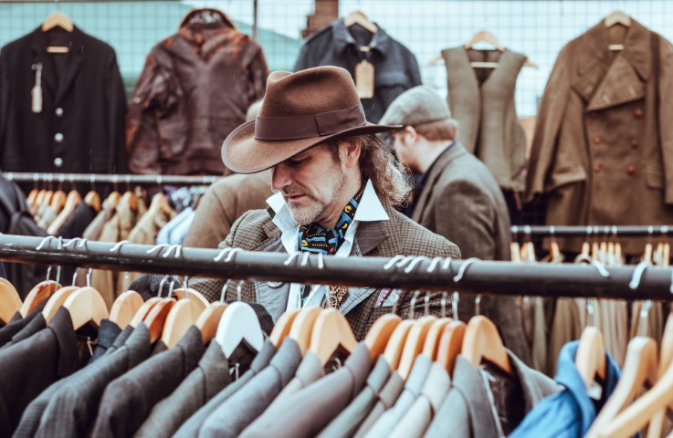
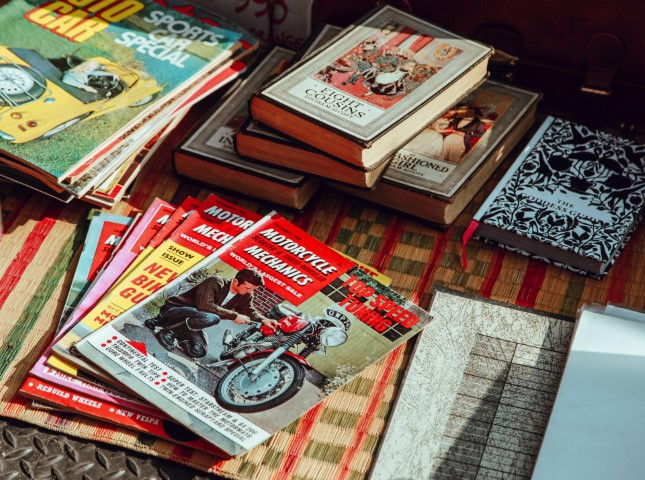
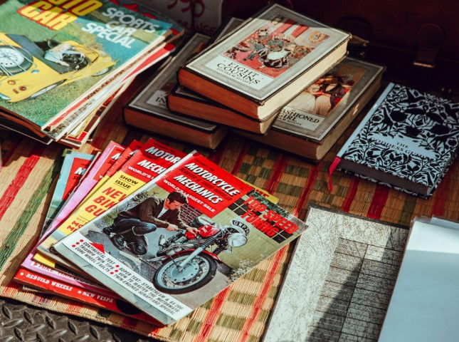
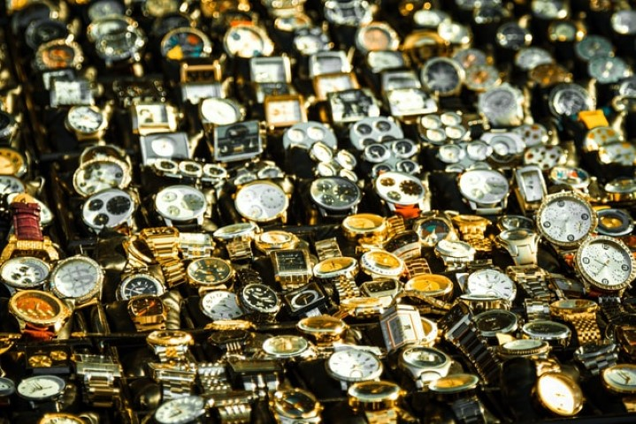
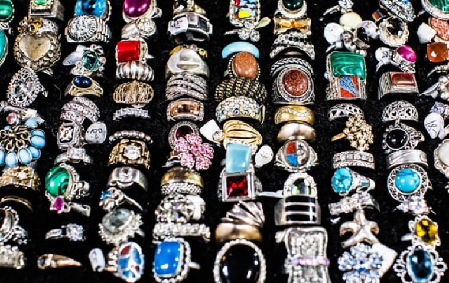
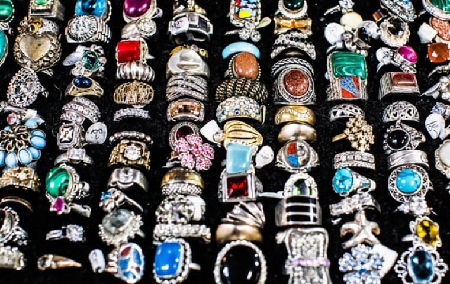
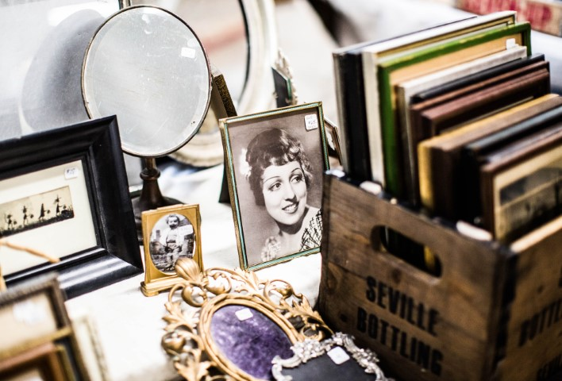

In 2020, like many small businesses, Ffantasi Flea ground to a halt. For the safety of all attendees, the market was closed until further notice. During this period, the future of our market was uncertain and we were afraid to lose the space we had created.
 

In 1998, a group of eco-conscious Cardiff locals wanted to elevate their local car boot into something more. They sought to create a space that celebrated shopping second hand. As such, Ffantasi Flea Market was born.


In 2022, the goals of Ffantasi Flea continue to center around fostering community spirit, promoting sustainability and sparking joy in the little things. Considering the impact the pandemic continues to have on the UK and the world, these values are more important now than ever.

 

However, with the green light to reopen in 2021, our market is back and better than ever. We continue to operate under social distance protocols, upholding our responsibility to protect the more vulnerable members of our society.


Since then, our market has grown into a platform for local events, a community space and one of the best flea markets in the UK. Attracting traders from all over the UK, we have a vast selection of goods available ranging from vintage clothes and antique homeware to books and bric-a-brac.


If these values sound up your street, sign up to our newsletter to hear more about upcoming Ffantasi Flea Market events.